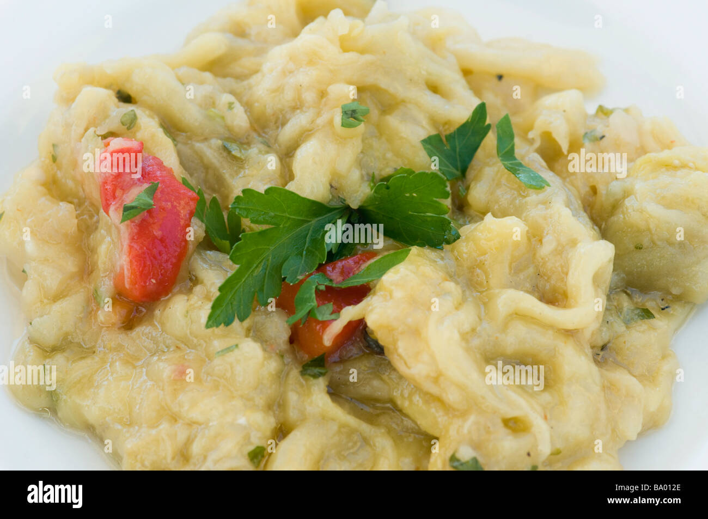

Bienvenidos a la Cocina Mediterránea
La cocina mediterránea se basa en ingredientes frescos, saludables y llenos de sabor. Con una rica tradición que abarca diversas culturas de la cuenca del Mediterráneo, esta gastronomía destaca por el uso del aceite de oliva, verduras, legumbres, cereales integrales, pescados y frutos secos. Disfruta explorando recetas, ingredientes y consejos para incorporar esta dieta a tu vida diaria.
Historia de la Cocina Mediterránea
La cocina mediterránea tiene sus raíces en las antiguas civilizaciones que habitaron alrededor del Mar Mediterráneo, como los griegos, fenicios y romanos. Con el tiempo, el intercambio cultural y comercial introdujo nuevos ingredientes y técnicas, creando una gastronomía variada y equilibrada. Influencias árabes, la adopción de productos traídos de América tras el descubrimiento del Nuevo Mundo, y la adaptación constante a lo largo de los siglos han hecho que la cocina mediterránea sea hoy reconocida internacionalmente no solo por su sabor, sino también por sus beneficios para la salud.
Actualmente, se considera la dieta mediterránea como Patrimonio Cultural Inmaterial de la Humanidad por la UNESCO, reflejando la importancia no solo de los alimentos en sí, sino también de las tradiciones, costumbres y formas de vida asociadas a esta manera de comer.